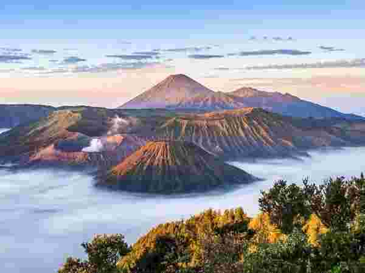
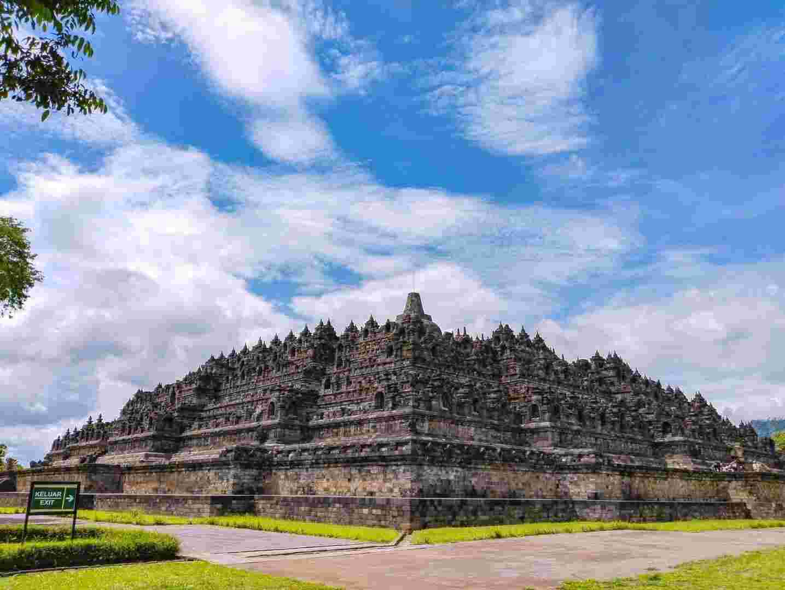
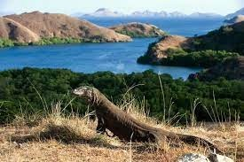

⭐⭐⭐⭐⭐ "Snorkeling Terbaik dalam Hidup Saya!" - Traveler Indonesia
⭐⭐⭐⭐⭐ "Snorkeling Terbaik dalam Hidup Saya!" - Traveler Indonesia
"Saya baru saja kembali dari Raja Ampat dan ini adalah pengalaman terbaik dalam hidup saya! Airnya sangat jernih, ikan-ikan berwarna-warni, dan terumbu karangnya masih sangat terjaga. Kami mengunjungi Arborek, Sawandarek, dan Wayag - semuanya luar biasa. Perjalanan panjang dari Jakarta benar-benar terbayar lunas. Tips: bawa kamera underwater, sunscreen reef-safe, dan siapkan budget untuk liveaboard jika ingin eksplorasi lebih banyak spot."
Destinasi: Raja Ampat, Papua Barat
Rating: 5/5 berdasarkan 2,347 review di Tripadvisor
Sumber: Tripadvisor Review
⭐⭐⭐⭐☆ "Sunrise Spektakuler Tapi Dinginnya Luar Biasa" - Keluarga dari Surabaya
"Kami mengunjungi Gunung Bromo akhir bulan lalu. Bangun jam 2 pagi dan naik jeep menuju Penanjakan 1 untuk melihat sunrise - pemandangannya benar-benar epic! Lautan pasir dan kawah yang mengeluarkan asap putih membuat suasana terasa magis. Suhu bisa mencapai 5°C jadi pastikan bawa jaket tebal dan sarung tangan. Jeeping di lautan pasir juga seru banget! Harga tiket masuk cukup terjangkau dan ada banyak pilihan homestay di sekitar Cemoro Lawang."
Destinasi: Gunung Bromo, Jawa Timur
Rating: 4.5/5 berdasarkan 1,892 review di Tripadvisor
Sumber: Tripadvisor Review
⭐⭐⭐⭐⭐ "Borobudur Sunrise Tour - Magical Experience!" - Backpacker Eropa
"Saya mengambil Borobudur Sunrise Tour dan ini adalah keputusan terbaik! Melihat candi terbesar di dunia secara perlahan terang oleh matahari pagi adalah pengalaman spiritual. Tur dimulai pukul 4 pagi, termasuk transportasi dari Jogja dan tiket masuk. Guide menjelaskan sejarah dengan sangat baik. Setelah sunrise, kami punya waktu untuk explore candi dengan detail. Harga tour reasonable dan sangat worth it untuk experience yang didapat."
Destinasi: Candi Borobudur, Yogyakarta
Rating: 5/5 berdasarkan review di Traveloka
Sumber: Traveloka Experience Review
 ⭐⭐⭐⭐☆ "Rinjani 2D1N - Challenging tapi Rewarding" - Pendaki dari Bandung
⭐⭐⭐⭐☆ "Rinjani 2D1N - Challenging tapi Rewarding" - Pendaki dari Bandung
"Baru saja menyelesaikan pendakian Gunung Rinjani 2 hari 1 malam via Sembalun. Jalur lumayan challenging terutama hari kedua menuju puncak, tapi pemandangan Danau Segara Anak dari atas benar-benar membuat semua lelah terbayar. Porter dan guide kami sangat professional dan helpful. Camping di Plawangan Sembalun dengan view bintang-bintang tak terlupakan. Pastikan fisik benar-benar fit sebelum attempt pendakian ini."
Destinasi: Gunung Rinjani, Lombok
Rating: 4.5/5 berdasarkan review di Traveloka
Sumber: Traveloka Experience Review
⭐⭐⭐⭐⭐ "Liveaboard Komodo 3D2N - Pengalaman Tak Terlupakan" - Diver dari Jakarta
"Kami mengambil paket liveaboard 3 hari 2 malam di Taman Nasional Komodo dan ini adalah experience terbaik sepanjang hidup! Snorkeling di Pink Beach, Manta Point, dan Kanawa Island - visibility excellent dan marine life sangat kaya. Melihat komodo di Pulau Rinca dari dekat (dengan pemandu) cukup menegangkan tapi aman. Kru kapal sangat friendly dan makanan di kapal enak-enak. Harga package termasuk worth it untuk experience yang didapat."
Destinasi: Taman Nasional Komodo, NTT
Rating: 5/5 berdasarkan 4,526 review di Tripadvisor
Sumber: Tripadvisor Review